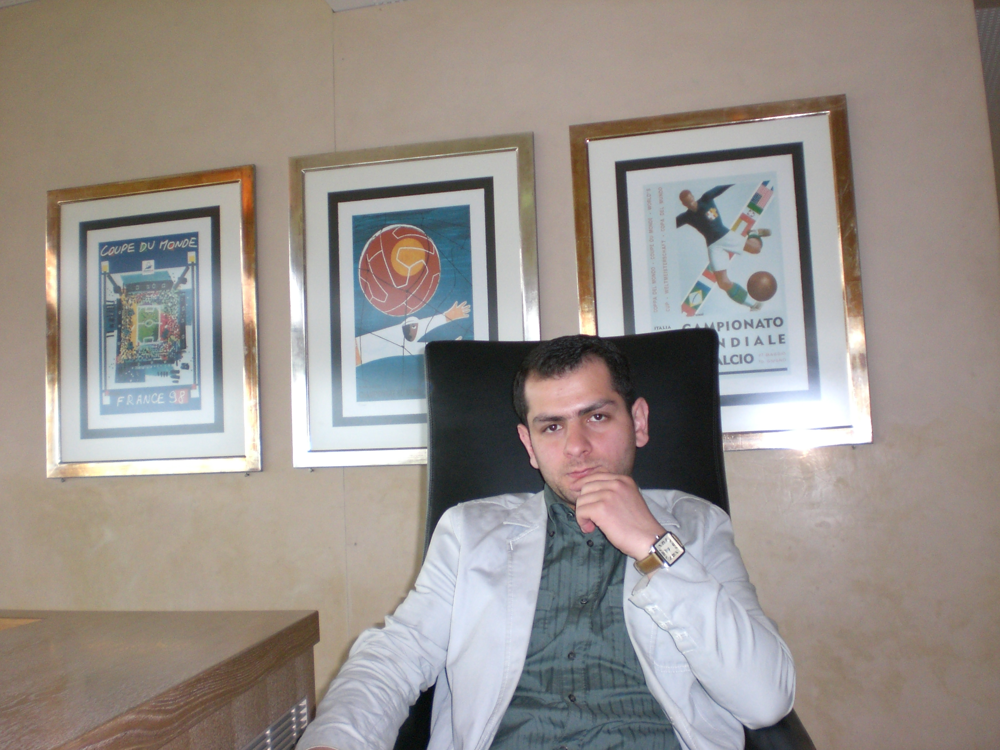
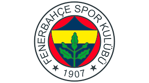
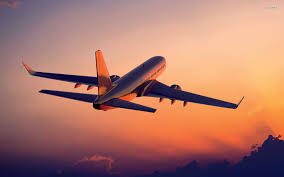

IRFAN AKCAY
Programmer 💻
I like to learn new technology trends and write some software programs on computer.
Sport
One of the biggest team in Turkiye. They are also success team in Europe as well. Fenerbahçe Sports Club, commonly known simply as Fenerbahçe or colloquially as Fener, is a professional football club based in Kadiköy, Istanbul, Turkey. They represent the men's football department of the Fenerbahçe S.K. sports club and compete in the Süper Lig, the top flight of Turkish football. In domestic football, Fenerbahçe have won a record 28 national championship titles and seven Turkish Cups...
Travel
I like to travel all of the world. I have been many places but I would like to visit some of the other places as well. Actually I have been many times in Europe but I never been in USA and South America.
Education

I finished my High School in Turkiye and also I finished Associate University program as well about Electronic. I would like to contunie to Electronic Engineering but I come to UK for improve my Enlish skill. After my English course I decided to stay and study in the UK. I finished my bachelor degree about Bussinee Management at University of Wales, Cardiff.